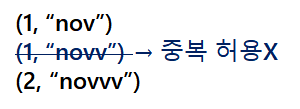
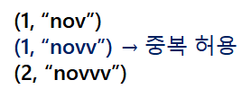
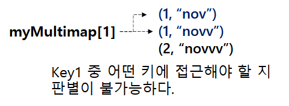

* 다음 포스팅은 STL map 컨테이너와 multimap 컨테이너의 차이점에 대해 다루고 있습니다.
map 혹은 multimap 컨테이너의 사용법에 대한 정보를 원하시는 분들은 다음 포스팅을 참고해 주세요.
→ [C++] STL map Container 사용 방법 정리
* 개인적인 공부 내용을 기록하는 용도로 작성한 글 이기에 잘못된 내용을 포함하고 있을 수 있으며,
지속적으로 수정해 나갈 예정입니다.
_Contents
#1 Key값의 중복
#2 [] 연산자
#3 equal_range
C++ STL 표준 라이브러리에는 map 과 multimap 컨테이너를 제공합니다.
map과 multimap 컨테이너의 사용방법은 거의 동일하지만 몇 가지 차이점이 존재합니다.
#1 Key값의 중복
- map 컨테이너는 키값의 중복을 허용하지 않는다.
#include <iostream>
#include <map>
using namespace std;
int main(){
// map container - key값 중복 허용 x
map<int, string> myMap;
myMap.insert(make_pair(1, "nov"));
myMap.insert(make_pair(1, "novv"));
myMap.insert(make_pair(2, "novvv"));
cout << "[Print myMap]" << '\n';
for(const auto& i : myMap){
cout << "key : " << i.first << " value : " << i.second << '\n';
}
return 0;
}map 컨테이너는 키값의 중복을 허용하지 않습니다.
위 코드를 실행시켜 보시면 중복된 두 번째 키 (1, "novv") 의 입력을 무시합니다.

[Print myMap]
key : 1 value : nov
key : 2 value : novvv
- multimap 컨테이너는 키값의 중복을 허용한다.
multimap<int, string> myMultimap;
myMultimap.insert(make_pair(1, "nov"));
myMultimap.insert(make_pair(1, "novv"));
myMultimap.insert(make_pair(2, "novvv"));
cout << "[Print myMultimap]" << '\n';
for(const auto& i : myMultimap){
cout << "key : " << i.first << " value : " << i.second << '\n';
}반면 multimap 컨테이너는 Key값의 중복을 허용합니다.
(1, "novv") 키를 중복처리해 삭제시킨 map 컨테이너와 달리 multimap 컨테이너는 키값이 중복으로 입력되어도, Key - Value 쌍을 제거하지 않습니다.

[Print myMultimap]
key : 1 value : nov
key : 1 value : novv
key : 2 value : novvv#2 [] 연산자
- map 컨테이너는 [] 연산자를 사용해 키값에 접근할 수 있다.
map 컨테이너는 다음과 같이 [] 연산자를 사용하여 키에 접근하여 Value를 출력할 수 있습니다.
// Access to Key 1
cout << "Key 1 -> " << myMap[1] << '\n';Key 1 -> nov
- multimap 컨테이너는 [] 연산자를 사용해 키값에 접근할 수 없다.
반면 multimap 컨테이너는 [] 연산자를 사용해 키값에 접근하는 것이 불가능합니다.
이유는 앞에서 설명드린 첫 번째 특성을 떠올려 보시면 당연한데, 애초에 multimap 컨테이너는 키값의 중복을 허용하기에 중복되는 키값중 어떤 키에 접근할 지 판별하는 것이 불가능하기 때문입니다.

#3 equal_range
multimap 컨테이너에 find member function을 사용해 중복된 키값에 접근해 보도록 하겠습니다.
multimap<int, string>::iterator it = myMultimap.find(1);
if(it != myMultimap.end()){
cout << "Key 1 -> " << it->second << '\n';
}
else{
cout << "myMultimap 컨테이너에 해당하는 원소가 존재하지 않습니다.";
}
중복된 키값들 중 가장 첫 번째 키에 접근하여 "nov"를 출력했습니다.
하지만 C++은 중복된 키에 대해 find 멤버 함수가 어떻게 접근하는지에 대한 정확한 표준을 제시하지 않습니다.
즉, 컴파일러 환경에 따라 완전히 상이한 랜덤값을 출력할 수 있다는 것 입니다.
[Print myMultimap]
key : 1 value : nov
key : 1 value : novv
key : 2 value : novvv
Key 1 -> nov
따라서 C++은 equal_range member function 을 제공합니다.
equal_range 함수는 key값에 해당하는 원소의 "범위"를 pair객체 형태로 반환해 줍니다.
정확히는 upper_bound 와 lower_bound를 각각 pair 객의 first, second 로 반환 합니다.
upper_bound(key) : key값에 해당하는 맨 마지막 원소의 "다음" 원소를 가리키는 반복자를 return 합니다.
lower_bound(key) : key값에 해당하는 맨 첫 번째 원소를 가리키는 반복자를 return 합니다.
cout << "[Print myMultimap ... Key1]" << '\n';
auto range = myMultimap.equal_range(1);
for(auto iter = range.first; iter != range.second; ++iter){
cout << iter->first << " : " << iter->second << " " << '\n';
}[Print myMultimap ... Key1]
1 : nov
1 : novvreference